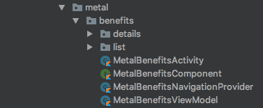
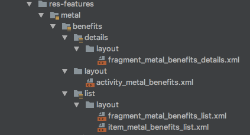
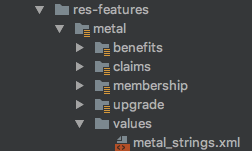
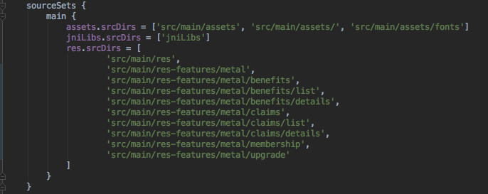

使用Gradle和Kotlin组织资源文件
如果您已经开发了3年或4年的App应用程序，那么您可能会注意到资源文件夹是如何变得混乱不堪的。尽管大多数开发人员会专注于组织他们的Java / Kotlin文件（通过功能或屏幕），但资源文件通常无人看管。
尝试减少混乱的一个尝试是使用文件的命名约定。例如，在一些使用的布局文件中：
- activity_*.xml
- fragment_*.xml
- item_*.xml
或者：
- feature1_screen1_activity.xml
- feature1_screen2_fragment.xml
- feature2_activity.xml
虽然这确保了Android Studio中的文件列表是相关的，但随着项目的增长，问题仍然存在：大量的（以某种方式排序或命名的）文件。
目录
一个不错的方法是实际上按照组织Java / Kotlin文件的逻辑方式组织资源。如果我们有这样的结构：

相应地，资源如下所示：

为了实现这种效果：
- 在AS中切换到项目视图
- 右键点击主文件夹并添加一个目录。我们将其称为res-features。
- 添加功能名称metal的另一个目录。
- 最后，为每个屏幕添加尽可能多的目录。
在每个屏幕目录内，添加标准的Android资源文件夹，这些文件夹以前是在原始的res文件夹中，比如layout，drawable-xhdpi，values ...
如果有多个屏幕使用资源，请将它们保存在父目录中。例如，metal 特征的字符串被分组到一个文件中，并且其内容被所有的metal 屏幕使用，所以我们将它放在父文件中：

Gradle 设置
我们需要让Android Studio查找新的目录而不是默认的“res”下来查找资源文件。为此，请转到build.gradle文件并找到对应每个屏幕的sourceSet和 目录：

尽管如此，如果项目存在多个module，这还是会变得无比臃肿和丑陋，所以我们可以将其抽取为公用的文件
抽取：方法1（所有Gradle）
如果我们将这些目录解压到另一个文件呢？ Gradle可以帮助我们使这看起来更整洁。
- 转到module的根目录。
- 添加新的目录，称之为resourcessystem
- 添加新的新文件，在这种情况下，我们将其称为metalresources.gradle
ext {
metaldirs = [ "src/main/res-features/metal",
"src/main/res-features/metal/benefits",
"src/main/res-features/metal/benefits/list",
"src/main/res-features/metal/benefits/details",
"src/main/res-features/metal/claims",
"src/main/res-features/metal/claims/list",
"src/main/res-features/metal/claims/details",
"src/main/res-features/metal/membership",
"src/main/res-features/metal/upgrade"]
}
- 在build.gradle文件中添加:
apply from: 'resourcessystem/metalresources.gradle'
def metalResources = rootProject.ext.metaldirs
- 最后，在sourceSets中
sourceSets {
main {
....
res.srcDirs = metalResources
}
}
抽取：方法2（Grdle+Kotlin）
更好的方法是将这些目录用单独的Kotlin字符串数组分组。每个数组代表一个功能。
- 在项目根目录添加buildSrc目录
- 在buildSrc里面添加一个名为build.gradle.kts的文件，并在其中启用kotlin插件并进行同步：
import org.gradle.kotlin.dsl.`kotlin-dsl`
plugins {
`kotlin-dsl`
}
- 添加目录src > main > java>resources
内部资源添加一个新的Kotlin对象文件，该文件具有该功能资源的一个数组列表
package resources
object Metal {
val dirs = arrayListOf(
"src/main/res-features/metal",
"src/main/res-features/metal/benefits",
"src/main/res-features/metal/benefits/list",
"src/main/res-features/metal/benefits/details",
"src/main/res-features/metal/claims",
"src/main/res-features/metal/claims/list",
"src/main/res-features/metal/claims/details",
"src/main/res-features/metal/membership"
)
}
对每个功能执行相同的操作以保持文件的精简和相关性
- 在build.gradle中，引用每个文件的所有目录来替换目录
import resources.*
sourceSets {
.....
res.srcDirs = Metal.dirs + Savings.dirs + Insurance.dirs
}
}
最后
- 你可以添加一个res-common目录给所有通用的layout是，drawables，values…它与res-features具有相同的级别
- 如果您打算通过功能模块化您的项目，这种方法实际上是一个好的开始。当您开始模块化时，您只需将每个功能文件夹复制到模块中。